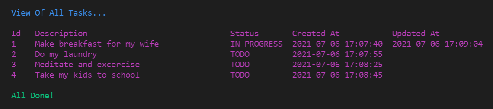
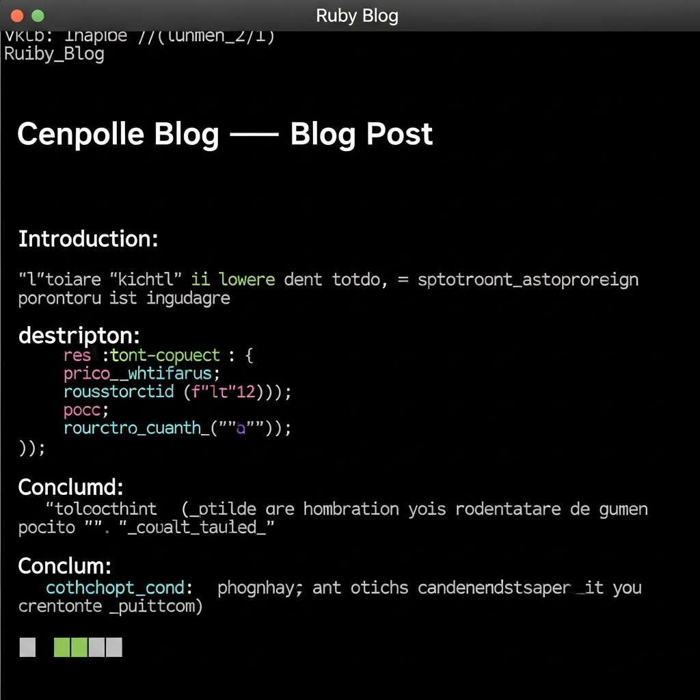
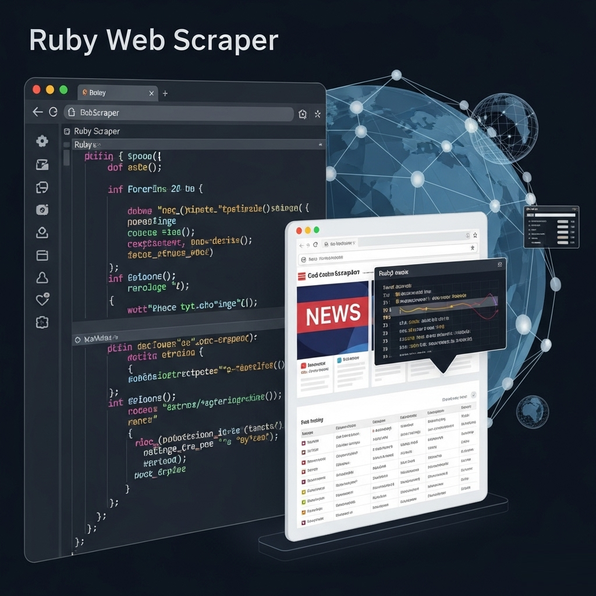

Building projects is how you level up from knowing syntax to becoming an actual dev boss. Here are some cool Ruby project ideas to try out, along with some real GitHub repos to peep and learn from.
Project Ideas
CLI To-Do List: A simple command-line app to add, delete, and view tasks.
Blog Engine: Build a basic blog platform using Ruby and Sinatra or Rails.
Web Scraper: Scrape websites for data like news headlines or weather info.
Chat Application: Create a real-time chat server using Ruby and WebSockets.
Game Development: Make a text-based adventure or simple game with Ruby.
Project Visuals

CLI To-Do List in action

Basic Ruby Blog UI

Web Scraper fetching data